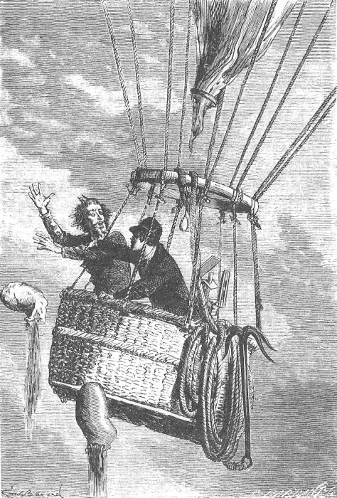
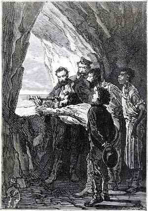

Побег и катастрофа
Роман начинается во время Гражданской войны в США. Пятеро северян, оказавшихся в осаждённом Ричмонде, решаются на отчаянный шаг — побег на воздушном шаре. Однако их план нарушает мощный ураган, который уносит шар далеко в океан.
После нескольких дней в воздухе шар терпит крушение. Герои оказываются на необитаемом острове, лишённые почти всех средств к существованию. Инженер Сайрус Смит пропадает в море, и его товарищи считают его погибшим.
Несмотря на отчаяние, колонисты не теряют надежды. Вскоре Сайрус Смит чудесным образом находится живым, что становится первым загадочным событием на острове.
Исследование острова

Герои начинают исследовать остров, определяя его географическое положение и природные ресурсы. Они называют его островом Линкольна и обнаруживают, что он богат полезными ископаемыми, животными и растительностью.
Благодаря научным знаниям Сайруса Смита, колонисты используют окружающую природу максимально эффективно. Они охотятся, выращивают растения и постепенно обеспечивают себя всем необходимым для жизни.
Исследование острова показывает, что он таит в себе немало опасностей: дикие животные, пираты и нестабильный вулкан.
Создание цивилизации
Постепенно колонисты переходят от простого выживания к созидательной деятельности. Они проходят путь развития человечества в миниатюре — от каменных орудий до сложных инженерных сооружений.
Главным достижением становится «Гранитный дворец» — надёжное жилище, вырубленное в скале. В нём герои живут, хранят припасы и защищаются от врагов.
- Производство кирпичей и керамики
- Выплавка металла
- Создание телеграфа
- Получение пороха и нитроглицерина
Необъяснимые события
Со временем колонисты сталкиваются с рядом странных и необъяснимых событий. Кто-то будто бы помогает им: вовремя появляется нужный предмет или происходит спасение в самый критический момент.
Появление ящика с инструментами, таинственные выстрелы, спасение от пиратов — всё это заставляет героев задуматься, что на острове присутствует неизвестный покровитель.
Тайна капитана Немо и спасение

В финале романа раскрывается главная тайна острова. Загадочным помощником оказывается капитан Немо — герой другого романа Жюля Верна «Двадцать тысяч лье под водой».
Капитан Немо живёт в подводной пещере на борту «Наутилуса». Он помогает колонистам, оставаясь в тени, и в конце своей жизни передаёт им последние наставления.
Извержение вулкана уничтожает остров, но благодаря помощи Немо герои спасаются и возвращаются к цивилизации, сохранив дружбу и опыт, полученный на острове.
Иллюстрации взяты из открытых источников